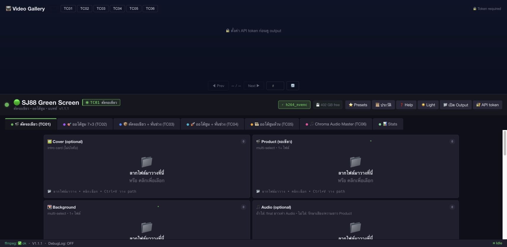
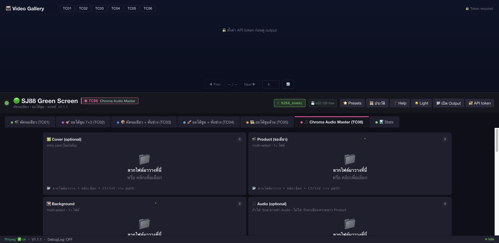
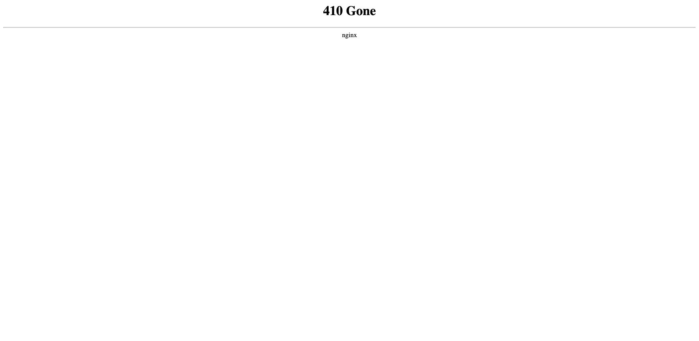

Green Cutdee production remediation
Target: https://green.cutdee.com · Project: green.cutdee.com · Date: 2026-08-18
Verdict: PASS_WITH_SCOPE_NOTE
Gateway/frontend/security/legacy-route remediation is verified. This is not a full media-release PASS because real upload/render and authenticated Browser gallery were not evaluated.
Gateway/frontend/security/legacy-route remediation is verified. This is not a full media-release PASS because real upload/render and authenticated Browser gallery were not evaluated.
Acceptance gates
| Gate | Result | Evidence |
|---|---|---|
| Pair completeness | 100% | pairs/*.json |
| Pair consistency | 100% | UI encoder/disk/auth guard/mode checks bind to API responses |
| Checks | 24/24 | test_matrix.json |
| Critical errors | 0 | Final service/runtime logs |
What was fixed
| Area | Fix | Proof |
|---|---|---|
| Gateway auth/API | Bearer + HttpOnly session, ownership checks, safe paths, corrected output schema, sanitized health. | gateway/app/backend/main.py:205-303,356,652-680,1015-1044,1200-1320 |
| Frontend | Token-required state, no persistent bearer token, TC05/TC06 gallery filters, safe health tooltip, correct download paths. | index.html:901-908,1463-1500,2391-2394,2609 |
| Nginx | Removed backup-vhost inclusion, added target headers, disabled public legacy route with 410. | green.cutdee.com.conf:9-12,125-136 |
| Legacy | Backed up SQLite, repaired raw/normalized checksum compatibility, stopped duplicate root process, systemd now stable. | legacy-schema.py:604-625; SQLite integrity ok |
| Origin security | Gateway/worker bind to loopback; public Nginx still serves site. | logs/api_probes.log, logs/prod_runtime.log |
Paired test results
| Pair | UI | API | Verdict |
|---|---|---|---|
| TC_HEALTH_UI_001 | v1.1.1, h264_nvenc, 402 GB free, TC01–TC06 | /api/health HTTP 200; 4/4 enabled healthy | PASS |
| TC_AUTH_GUARD_UI_001 | Token required; Render disabled; no false result | /api/outputs without token HTTP 401 | PASS |
| TC_MODE_MATRIX_UI_001 | TC02–TC06 active; empty Render disabled; TC06 audio count 0 | TC05/TC06 render endpoints HTTP 401 without token | PASS_WITH_SCOPE_NOTE |
| Legacy supplemental | Browser heading 410 Gone | /old/ HTTP 410 | PASS |
Browser evidence
Input ready / health

TC06 audio guard

Legacy route closed

Scope notes
- Real media upload/render, output hash, ffprobe, full decode: NOT_EVALUATED.
- Authenticated gallery UI: NOT_EVALUATED; secret was not typed into Browser. Authenticated API schema is recorded separately and is not a UI PASS.
- RTX2050 slot at
103.253.73.29:55522is explicitly disabled because its health endpoint was unreachable; configured capacity remains visible as 5 with 1 disabled. - Co-host Nginx protocol warnings and host-wide firewall were not changed without owner/port allowlist.
Artifacts
report.md · summary.json · test_matrix.json · api/ · pairs/ · logs/